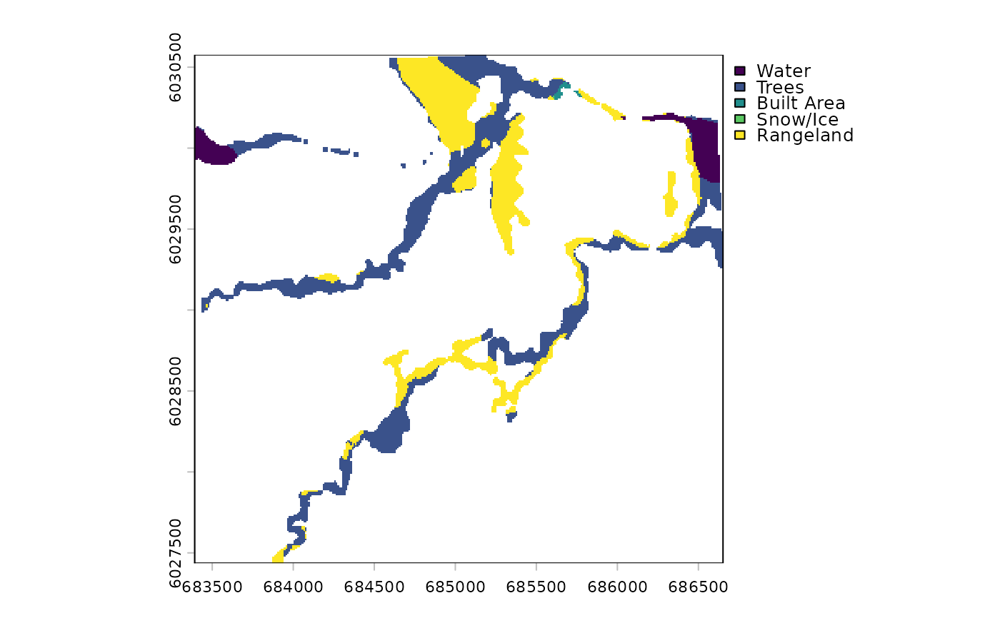
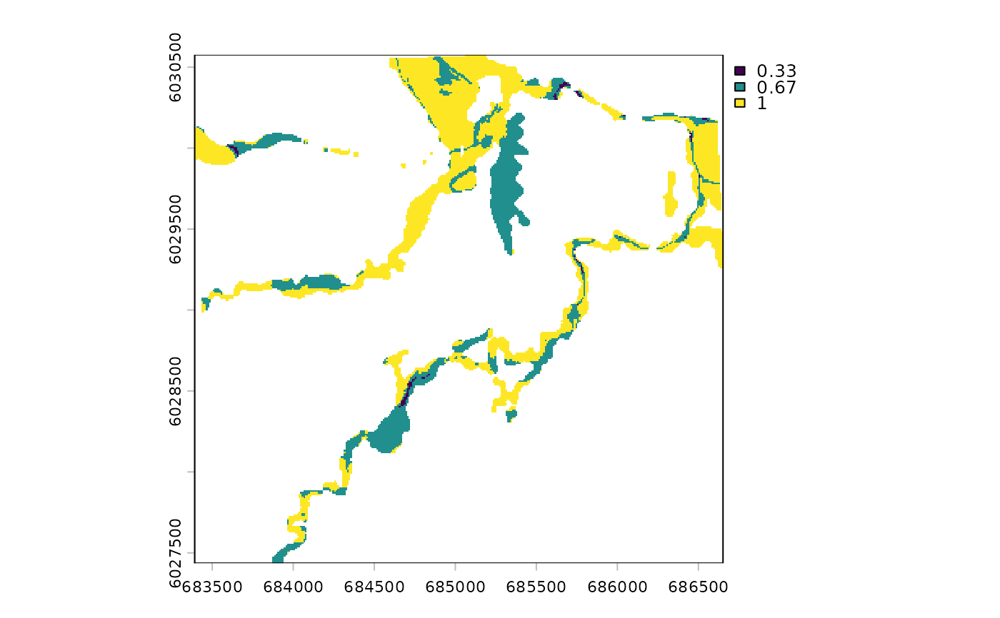

Compute per-pixel mode across classified rasters
Source:R/dft_rast_consensus.R
dft_rast_consensus.RdGiven multiple classified rasters of the same extent and resolution,
compute the most frequent (mode) class at each pixel. Useful for
temporal smoothing — averaging out single-year misclassification noise
before running dft_rast_transition().
Arguments
- x
A named list of classified
SpatRasters (e.g. fromdft_rast_classify()). Rasters with slightly different extents are automatically resampled (nearest-neighbour) to the first raster's grid.- confidence
Logical. If
TRUE, return a second layer with the proportion of input rasters that agreed on the mode (e.g. 3/3 = 1.0, 2/3 = 0.67). DefaultFALSE.
Value
A SpatRaster. When confidence = FALSE, a single-layer factor
raster with the modal class. When confidence = TRUE, a two-layer
raster: "consensus" (factor) and "confidence" (numeric 0–1).
Details
Mode smoothing filters single-year misclassification but cannot distinguish noise from real change. A pixel that genuinely transitions mid-window may be voted back to its original class if the pre-change years outnumber the post-change years. See drift#9 for discussion of weighted and breakpoint approaches.
Examples
# Build 3 classified rasters from example data
r17 <- terra::rast(system.file("extdata", "example_2017.tif", package = "drift"))
r20 <- terra::rast(system.file("extdata", "example_2020.tif", package = "drift"))
r23 <- terra::rast(system.file("extdata", "example_2023.tif", package = "drift"))
classified <- dft_rast_classify(
list("2017" = r17, "2020" = r20, "2023" = r23), source = "io-lulc"
)
# Consensus raster (modal class)
cons <- dft_rast_consensus(classified)
terra::plot(cons)

# With confidence layer
cons2 <- dft_rast_consensus(classified, confidence = TRUE)
terra::plot(cons2[["confidence"]])
